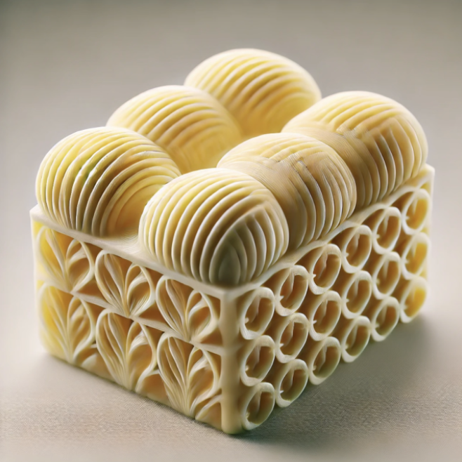

Instructions for making the all-new Fried Chicken
Step 1: Prepare the Ingredients:
• Mix the curry base (coconut milk, broth, tomato puree, and spices) into a smooth consistency.
• Dice vegetables and proteins into small, uniform pieces for extrusion.
Step 2: Load the Printer:
• Load the curry base into the primary extrusion cartridge.
• Load diced vegetables and protein into secondary cartridges.
Step 3: Select the Design:
• Choose a structured curry model with layers of curry base, vegetables, and protein.
Step 4: Print the Curry:
• Start with a thick layer of curry base as the foundation.
• Add alternating layers of vegetables, protein, and spices.
• Finish with a drizzle of curry base on top for garnish.
Step 5: Cook Post-Printing (Optional):
• Simmer the printed curry briefly (5–10 minutes) to blend flavors and soften vegetables.
>
Step 6: Serve:
• Serve the curry over steamed rice, quinoa, or with whole-grain naan for a complete meal.